分层场景：决策加工组件

一、背景
当前决策输出的一些现状总结如下：
- Zeus现支持规则执行结果的实时返回，但对于一个请求下执行多条规则会返回多个决策，即决策list。业务侧需要自己进行决策信息的汇总、合并以及取唯一值。对于通过Tatooine接入Zeus的业务（交易、账户、UGC等），由Tatooine提供固定的决策合并服务。但对于这部分用户来说，决策汇总逻辑是黑盒的，都在研发的硬编码中，进而导致涉及决策异常的排查定位困难、时间长。
- 对于部分策略团队（如账户），过去使用【规则优先级+组合决策】的模式，在想要调整最终输出决策时，不够灵活。比如难以解决验证决策的可验性再下发，难以解决不同风险域下决策优先级高低不同的问题。
- 另外，在分层场景中，在补偿链路执行命中的拦截，已无法给实时链路输出，希望能转化为执行「踢出登录态」等异步动作对实时链路中放行的流量进行补偿处置。
二、名词解释
|
名词 |
解释 |
|---|---|
|
新的规则集合实体，对标过去一个普通场景，在场景内支持以层级关系+路由条件组织成树状的执行链路，使场景内策略达到分层执行的效果。因超时（或短路）未执行的链路将获得补偿。 |
|
|
决策加工 |
分层场景里的一种组件，各策略节点执行输出的决策，都将汇总于决策加工组件进行统一加工输出 对整个分层场景各个节点输出的决策进行统一合并、过滤等处理。可在组件内选择加工模式、设置补偿决策（实时链路中因短路/超时未输出的普通决策，若在补偿链路命中，则可以转化为异步决策进行补偿输出）。 |
三、使用指南
3.1 添加决策加工组件
|
说明 |
图 |
|---|---|
|
进入分层场景编辑态 拖动决策加工组件到画布空白区域，即可完成添加。 添加完成后在画布左上角形成固定区域——决策加工区，可点击组件编辑详细内容（可根据需要拉宽） 一个分层场景至多使用1个决策加工组件，因此拖出去后工具栏中的决策加工组件消失。如果想弃用加工组件，可以右键决策加工区，点击删除。 |
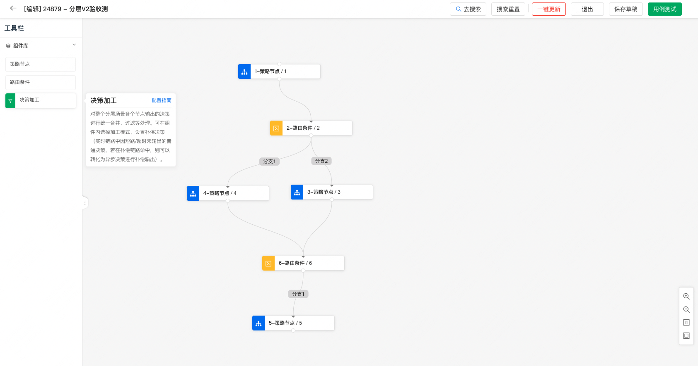 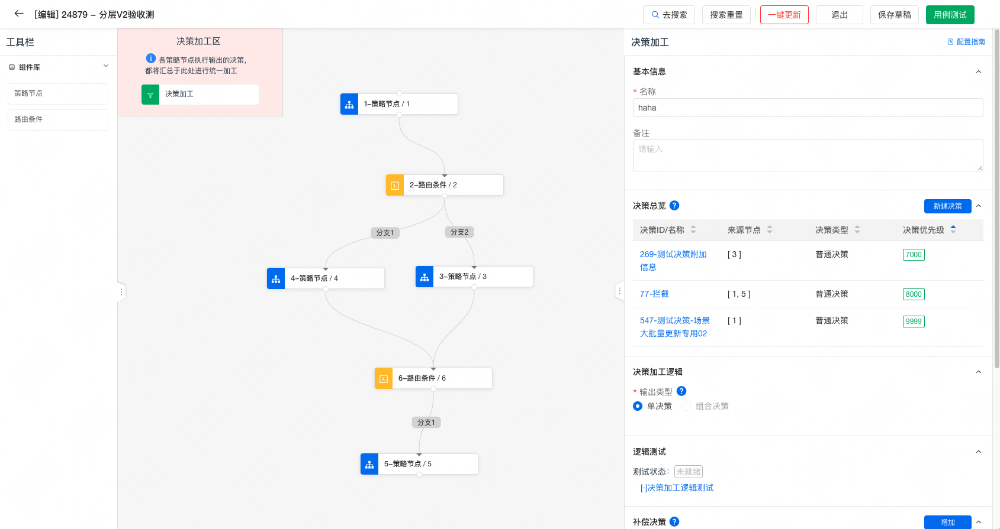 |
3.2 决策加工逻辑
|
说明 |
图 |
|---|---|
|
组件详情中选择决策加工逻辑：单决策or组合决策 合并依据：决策优先级 合并对象：分层场景中的所有决策 合并模式：单决策模式 / 组合模式 平台给每个业务空间默认选择了1种合并模式。 1.不启用：命中规则对应的决策全输出，返回调用方决策List和所有命中details 2.单决策模式：
适用于：交易安全、UGC营销、内容安全 3.组合模式：
适用于：账户安全 |
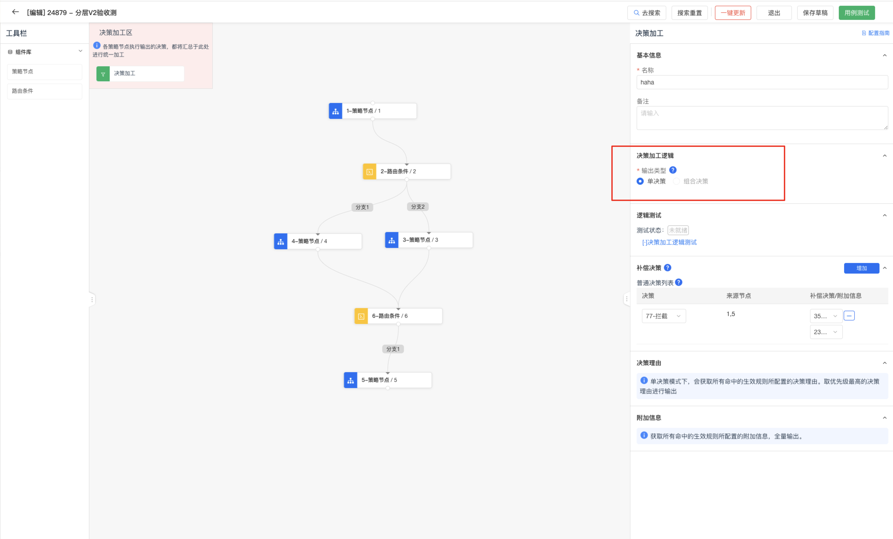 单决策模式 执行逻辑 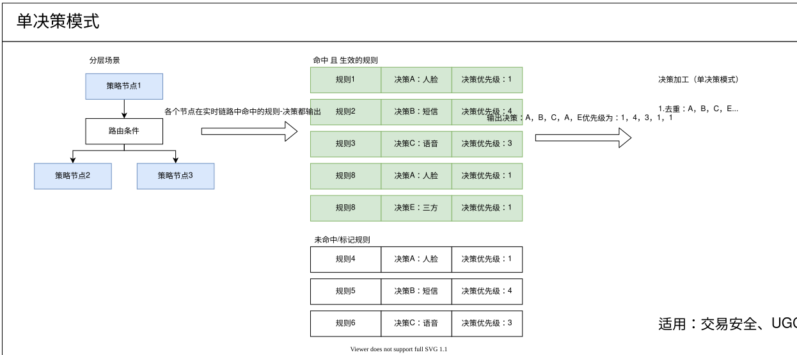 组合模式 执行逻辑 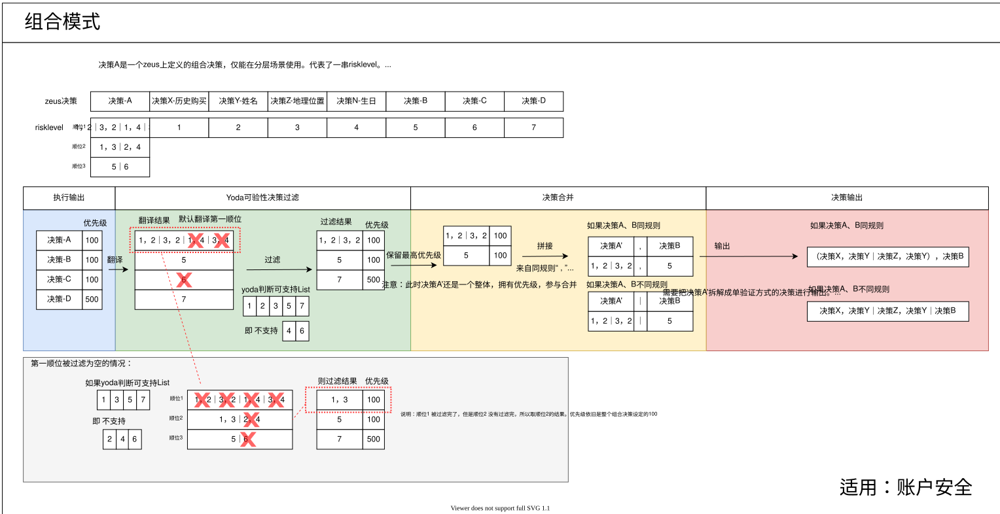 |
3.3 决策合并单点测试
|
说明 |
图 |
|---|---|
|
为什么要进行单点测试？ ——对决策加工组件的能力进行mock，测试执行逻辑是否符合预期 如何进行单点测试？ ——在逻辑测试中点击【决策加工逻辑测试】
|
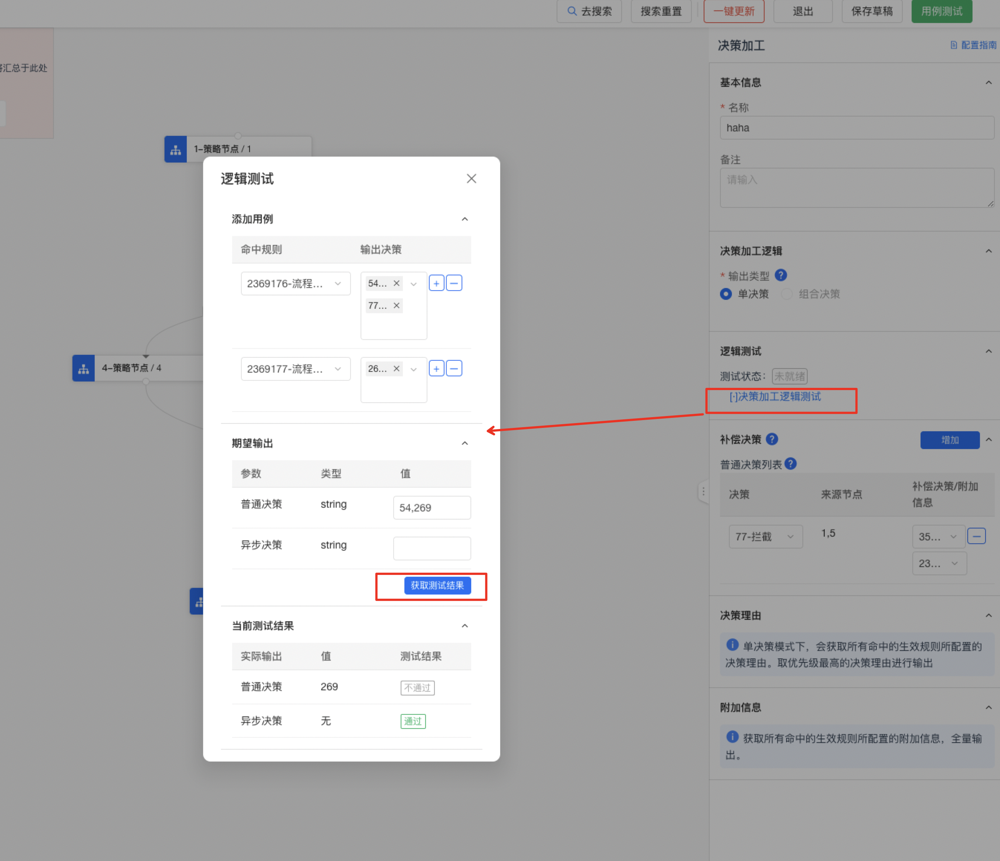 |
3.4 补偿决策
|
说明 |
图 |
||||||||||||||
|---|---|---|---|---|---|---|---|---|---|---|---|---|---|---|---|
|
分层场景：补偿执行中，命中的【普通决策】无法输出给调用方。因为实时链路中的普通决策结果已经实时下发了，补偿链路在异步执行完后再下发【普通决策】输出无意义。 因此补偿链路中如果识别到了风险，产出的【普通决策】会期望能够以其他方式追加作用给下游。比如将【拦截】（普通决策）转化为【踢出登陆态】（异步决策）。——此时【踢出登陆态】就是【拦截】的【补偿决策】 【例子】 账户在【实时链路】中某条策略的决策配置【拦截】 （from策略节点--规则配置）
但是因为超时没执行到，实时链路实际【放行】了。规则在补偿链路中执行产出了【拦截】，但已经无法给到下游。 （from 决策加工组件--补偿配置）
效果上，风险用户整个旅程为：存在有风险的登陆操作，但是被放行，成功登陆。紧接着不久，就被异步踢出了登录态，阻止了后续的风险。 根据上述介绍，结合几类决策特点可知，只有【普通决策】才会需要配置补偿；而只有【异步决策】才可作为【补偿决策】进行配置； 配置方式：补偿决策-点击【增加】，在决策列下拉 选择此分层场景中的具体1个普通决策（或组合决策），为其配置对应的补偿决策（下拉选择一个异步决策）。 在提交配置的时候会进行冲突校验。不允许各个普通决策（组合决策）配置的补偿有冲突。 |
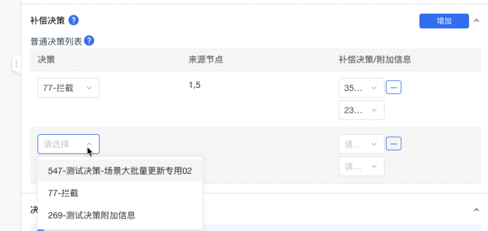 |
3.5 用例测试与测试结果
|
说明 |
图 |
|---|---|
|
【用例测试】 当场景使用了决策加工组件，在用例测试时，会自动展示场景的决策合并模式：单决策模式/组合模式。（各自的合并逻辑见3.2） 添加用例：可选择Json或RequestID
期望输出：将会分为普通决策和异步决策两部分，见3.2。 若认为输出结果中 某类决策不存在，空着即可。 点击【一键测试】，将会分别比对普通和异步是否符合用户预期。符合则提示通过。可以在提示弹窗&历史测试结果中，点击【查看报告】，以图的视角预览整个场景的命中明细。 |
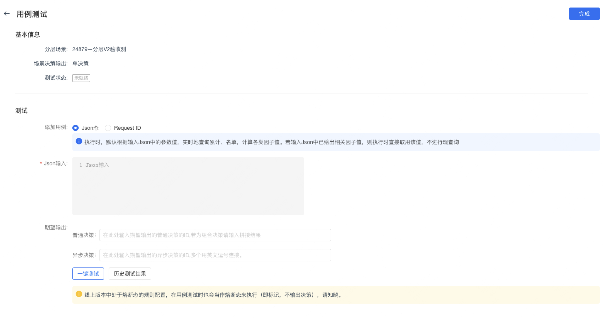 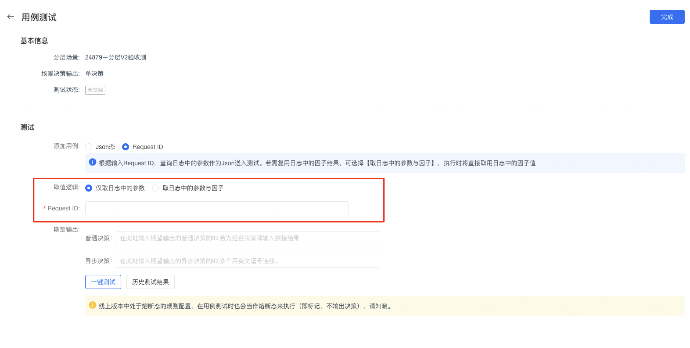 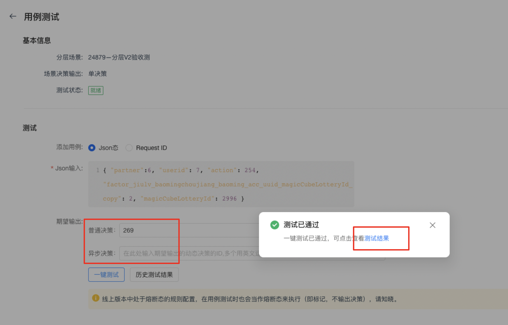 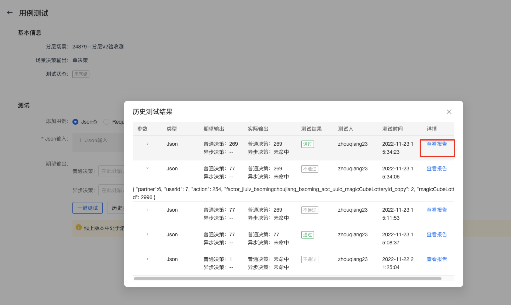 |
|
【测试结果】 测试报告页中，依旧以图形式展示策略体系。可以点击各个组件，查看各个组件规则命中、路由条件命中的结果或是决策加工的结果。 有蓝色定位icon的策略节点代表该请求经过的节点，可帮助用户快速定位。 点击决策加工组件，右侧抽屉将展示各类决策、附加信息、决策理由的合并输出情况，也会展示合并前的原始list 线上版本中处于熔断态的规则配置，在用例测试时也会当作熔断态来执行（即标记，不输出决策），请知晓。 |
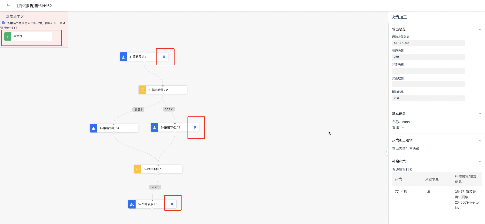 |
四、FAQ
|
问题 |
答 |
|---|---|
|
什么是Yoda可验证过滤，我的场景在决策合并时有这个步骤么？ |
目前仅开放给3空间的分层场景，用于账户安全在输出各种验证方式后，统一在yoda进行过滤，排除掉当前设备/用户不支持的验证决策。 |
❤️ 欢迎使用并在文档评论区提供宝贵意见与建议！
Yoda可验证性过滤：目前仅开放给3空间的分层场景，用于账户安全在输出各种验证方式后，统一在yoda进行过滤，排除掉当前设备/用户不支持的验证决策。